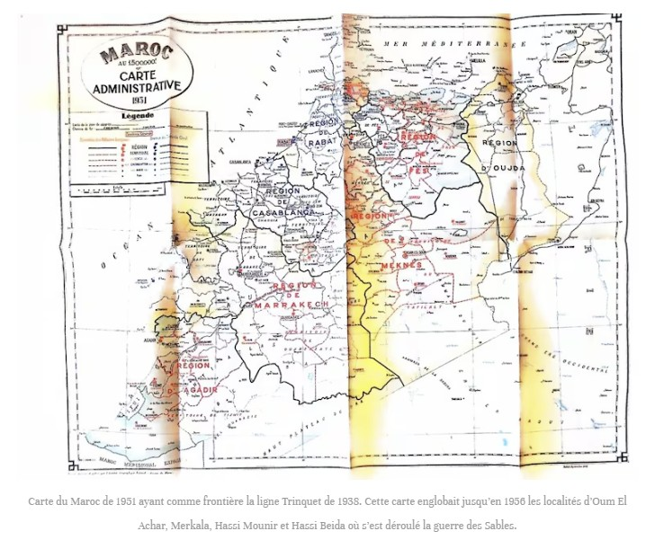
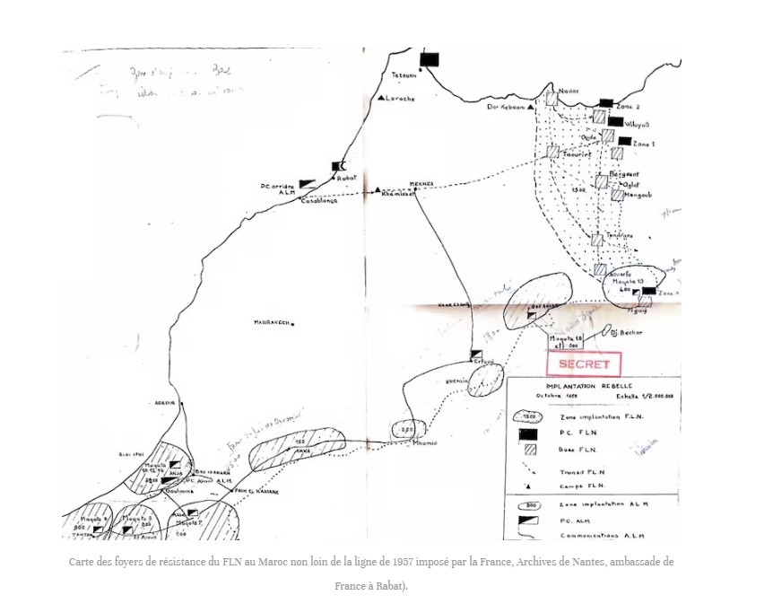
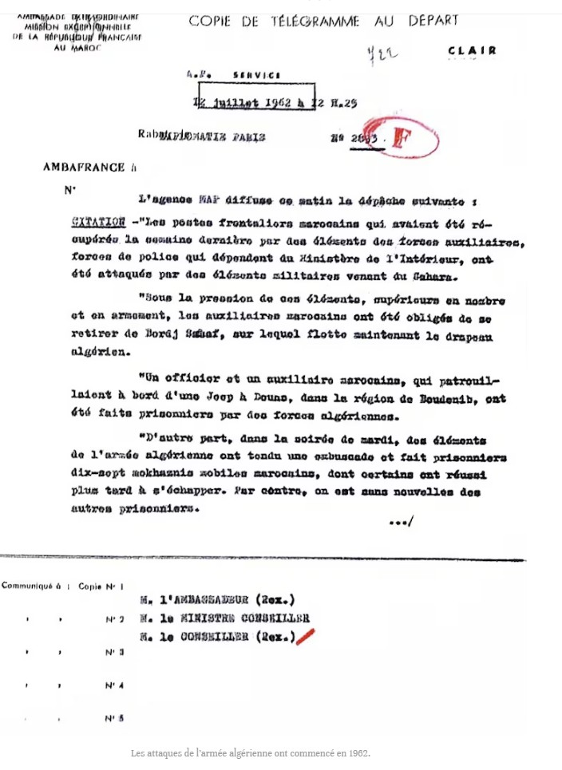
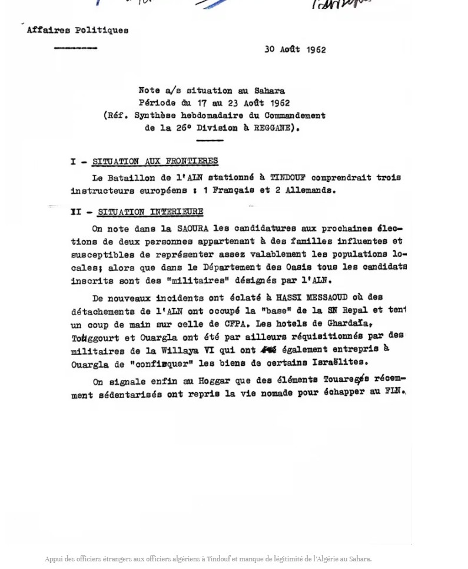
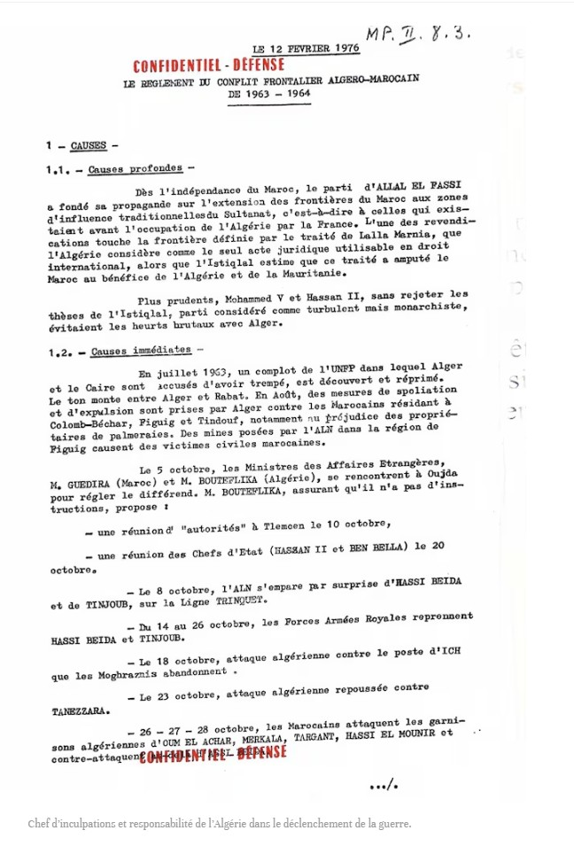
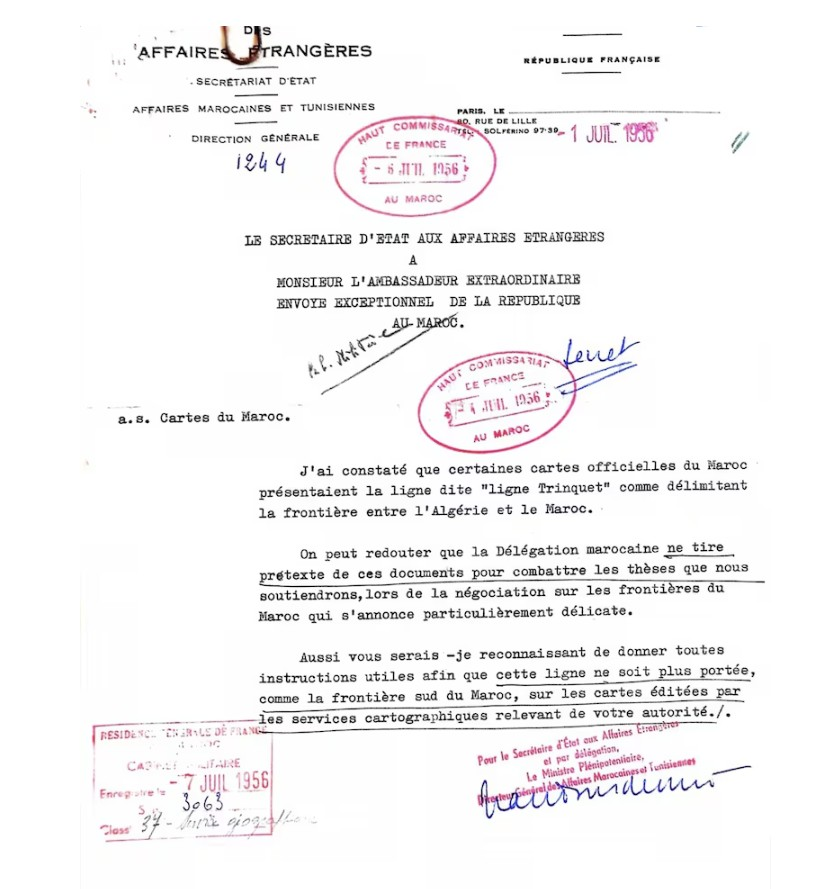
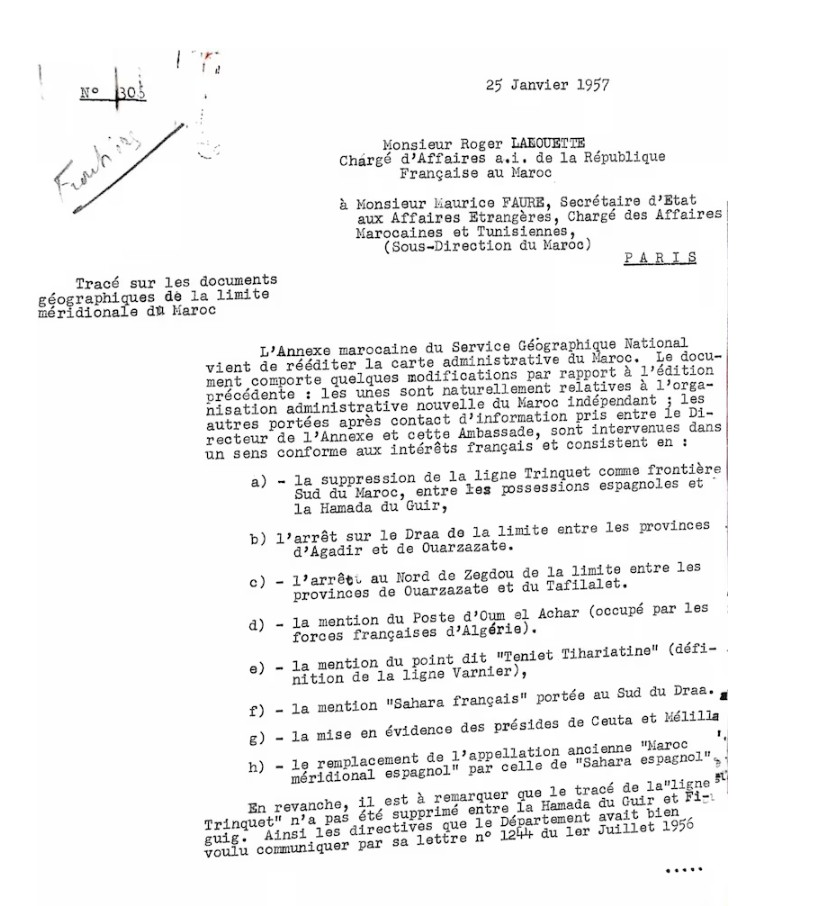
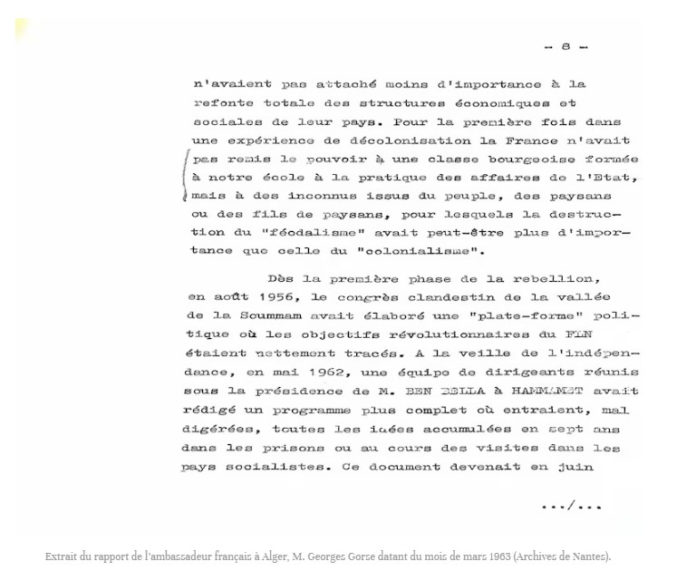
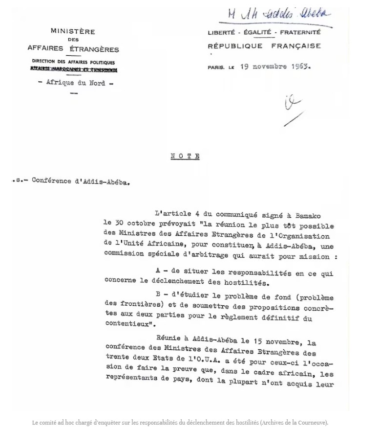

منهج القراءة
ماذا تقول الصور المعروضة فعلاً؟
يضم هذا الملف عشر صور أرشيفية مختلفة: خرائط إدارية، ومراسلات دبلوماسية، وبرقيات وتقارير فرنسية. وقد أُعيدت كتابة العناوين والتعليقات هنا حتى يصف كل عنوان الوثيقة الموضوعة تحته وصفاً مباشراً، من دون نسبة أقوال أو نتائج إليها لا تظهر في نصها.
يجب التمييز بين تاريخ الوثيقة، والمعلومة التي تنقلها، والاستنتاج التاريخي المبني عليها. فالبرقية التي تنقل خبراً صحافياً ليست حكماً نهائياً، والتقرير الاستعادي ليس وثيقة معاصرة للحدث، ومهمة لجنة التحكيم ليست هي نتيجة تحقيقها.
خريطة التقسيم الإداري للجزائر سنة 1962
تُظهر الخريطة التنظيم الإداري الفرنسي للجزائر سنة 1962، ومنه محافظات وهران والجزائر وقسنطينة، إضافة إلى «إقليم الساورة» و«إقليم الواحات». وهي وثيقة خرائطية إدارية؛ ولا يكفي شكلها وحده لإصدار حكم قانوني على تاريخ السيادة أو ترسيم الحدود.
هوية الصورة: خريطة فرنسية بعنوان «La carte de l’Algérie en 1962»؛ رقم الحفظ غير ظاهر في النسخة المصوّرة.
الخريطة الإدارية للمغرب سنة 1951
تحمل الصورة عنوان «Maroc — Carte administrative 1951». وتُقرأ دلالتها الحدودية مع المراسلات الفرنسية اللاحقة لسنتي 1956 و1957، ولا سيما الوثيقتين السابعة والثامنة المتعلقتين بكيفية رسم «خط ترينكيه» على الخرائط الرسمية.
هوية الصورة: خريطة إدارية للمغرب بمقياس 1:1,500,000، مؤرخة سنة 1951؛ رقم الحفظ غير ظاهر.

خريطة سرية لانتشار منشآت جبهة وجيش التحرير داخل المغرب
تتضمن الخريطة مفتاحاً بالفرنسية يحدد مناطق انتشار جبهة التحرير الوطني (FLN)، ومراكزها وقواعدها ومسارات العبور والمخيمات، إضافة إلى مناطق انتشار جيش التحرير المغربي (ALM). وهي توثق جغرافية النشاط المسلح وشبكات العبور داخل المغرب؛ لكنها لا تعرض اتفاقاً بين الحسن الثاني والحكومة المؤقتة للجمهورية الجزائرية.
هوية الصورة: خريطة موسومة «SECRET — Implantation rebelle»، من محفوظات نانت، صندوق سفارة فرنسا بالرباط وفق التعليق المرفق بالصورة.

برقية 10 أبريل 1963 بشأن حاسي بيضا وحوادث حدودية
تنقل سفارة فرنسا في الرباط برقية لوكالة المغرب العربي للأنباء عن هجمات على مواقع حدودية مغربية، وانسحاب عناصر مغربية من حاسي بيضا ورفع العلم الجزائري فوقها، وأسر عناصر مغربية على يد قوات جزائرية. الوثيقة تنسب هذه المعلومات إلى برقية الوكالة؛ لذلك ينبغي عرضها بوصفها خبراً منقولاً في مراسلة دبلوماسية، لا تقرير تحقيق مستقل.
هوية الوثيقة: سفارة فرنسا في المغرب، نسخة برقية صادرة، 10 أبريل 1963، تنقل خبراً لوكالة المغرب العربي للأنباء.

مذكرة عن الوضع في الصحراء، 30 أغسطس 1962
تلخص المذكرة الوضع بين 17 و23 أغسطس 1962. وتذكر، في فقرتها الخاصة بالحدود، أن كتيبة من جيش التحرير الوطني الجزائري متمركزة في تندوف كانت تضم ثلاثة مدربين أوروبيين: فرنسياً واحداً وألمانيين اثنين. ثم تنتقل إلى الوضع الداخلي في الساورة والواحات والهقار.
هوية الوثيقة: «Note s/s situation au Sahara — Période du 17 au 23 août 1962»، مؤرخة في 30 أغسطس 1962.

تقرير دفاعي فرنسي استعادي عن نزاع 1963–1964
الوثيقة تقرير فرنسي مصنف «Confidentiel-Défense»، صادر في 12 فبراير 1976، أي بعد النزاع بأكثر من اثني عشر عاماً. يعرض تسلسلاً زمنياً يذكر استيلاء جيش التحرير الوطني الجزائري على حاسي بيضا وتينجوب في 8 أكتوبر، ثم استعادتهما من القوات المسلحة الملكية بين 14 و26 أكتوبر، ويذكر بعد ذلك عمليات وهجمات متبادلة.
هوية الوثيقة: «Le règlement du conflit frontalier algéro-marocain de 1963–1964»، تقرير مؤرخ في 12 فبراير 1976.

مراسلة فرنسية حول إظهار «خط ترينكيه» على خرائط المغرب، يوليو 1956
تلاحظ المراسلة أن بعض الخرائط الرسمية للمغرب كانت تعرض «خط ترينكيه» بوصفه فاصلاً بين الجزائر والمغرب. وتطلب إعطاء تعليمات حتى لا يستمر رسم هذا الخط، على الخرائط الصادرة عن المصالح الفرنسية، باعتباره الحد الجنوبي للمغرب. ويكشف النص أن التمثيل الخرائطي للحدود كان موضوع نقاش داخل الإدارة الفرنسية نفسها.
هوية الوثيقة: كتابة الدولة الفرنسية للشؤون الخارجية، «a.s. Cartes du Maroc»، مؤرخة في يوليو 1956.

تعديلات الخريطة الإدارية للمغرب، 25 يناير 1957
تسرد المراسلة تعديلات مقترحة على خريطة إدارية جديدة للمغرب، منها حذف «خط ترينكيه» بوصفه حداً جنوبياً في بعض المقاطع، وتعديل خطوط داخلية وتسميات جغرافية، وذكر موقع أم العشار بوصفه محتلاً من القوات الفرنسية الموجودة في الجزائر. وتلاحظ الوثيقة أيضاً أن حذف الخط لم يكن قد اكتمل في مقطع الحمادة بين وادي كير وفكيك.
هوية الوثيقة: «Tracé sur les documents géographiques de la limite méridionale du Maroc»، رسالة مؤرخة في 25 يناير 1957.

صفحة من تقرير عن الوضع الداخلي الجزائري، مارس 1963
تتناول الصفحة إعادة بناء البنى الاقتصادية والاجتماعية بعد الاستعمار، وبرنامج مؤتمر الصومام سنة 1956، ثم برنامجاً أعدته مجموعة من القياديين برئاسة أحمد بن بلة في الحمامات سنة 1962. وهي تقدم سياقاً سياسياً داخلياً جزائرياً، لكنها لا تتحدث في هذه الصفحة عن تندوف أو اتفاق حدودي أو هجوم عسكري على المغرب.
هوية الوثيقة: الصفحة الثامنة من تقرير للسفير الفرنسي في الجزائر جورج غورس، مارس 1963، وفق التعليق المرفق بالصورة.

مذكرة 19 نوفمبر 1963 حول مؤتمر أديس أبابا ولجنة التحكيم
تذكّر المذكرة بأن المادة الرابعة من بيان باماكو، الموقع في 30 أكتوبر، نصت على اجتماع وزراء خارجية منظمة الوحدة الإفريقية لإنشاء لجنة تحكيم خاصة في أديس أبابا. وحددت مهمتها في بحث مسؤوليات اندلاع القتال، ودراسة مشكلة الحدود، وتقديم مقترحات لتسوية النزاع. النص المعروض يحدد مهمة اللجنة، ولا يعرض نتيجة نهائية توصلت إليها.
هوية الوثيقة: وزارة الخارجية الفرنسية، مديرية الشؤون السياسية — إفريقيا الشمالية، مذكرة مؤرخة في 19 نوفمبر 1963.

ما الذي يمكن استخلاصه بدقة؟
توثق المجموعة اختلاف التمثيلات الخرائطية للحدود قبل سنة 1963، ومعطيات عن الوضع العسكري والسياسي في الصحراء سنة 1962، وحوادث حدودية أوردتها مراسلة دبلوماسية في ربيع 1963، ثم تقدم رواية فرنسية استعادية لتسلسل العمليات في أكتوبر 1963. كما توضح أن تحديد مسؤولية اندلاع القتال أُسند إلى لجنة تحكيم إفريقية بعد اتفاق باماكو. لكنها، بصورتها الحالية، لا تتضمن تقرير النتائج النهائية لتلك اللجنة؛ لذلك الأدق القول إن هذه الوثائق تضيء جوانب من الأزمة، لا أنها تحسم وحدها جميع وقائع النزاع ومسؤولياته.
قائمة الصور والوثائق المعروضة
- خريطة التقسيم الإداري للجزائر سنة 1962.
- الخريطة الإدارية للمغرب سنة 1951.
- خريطة سرية لانتشار منشآت FLN وALN وALM داخل المغرب.
- برقية سفارة فرنسا في الرباط، 10 أبريل 1963.
- مذكرة الوضع في الصحراء، 30 أغسطس 1962.
- تقرير دفاعي فرنسي استعادي عن نزاع 1963–1964، صادر سنة 1976.
- مراسلة فرنسية حول خط ترينكيه على خرائط المغرب، يوليو 1956.
- مراسلة تعديلات الخريطة الإدارية للمغرب، 25 يناير 1957.
- صفحة من تقرير جورج غورس عن الوضع الداخلي الجزائري، مارس 1963.
- مذكرة مؤتمر أديس أبابا ولجنة التحكيم، 19 نوفمبر 1963.
تنبيه توثيقي: أرقام الحفظ الأرشيفية الكاملة غير ظاهرة في معظم النسخ المصورة. ينبغي إضافتها مستقبلاً من ملفاتها الأصلية قبل اعتماد إحالات أكاديمية نهائية.